プログラミング用の設定
VSCode・CLI・基本コマンドなど, 講義共通の環境設定
プログラミング用の設定
この設定は複数の講義で共通の内容です. 各講義の言語固有のセットアップ (Python, Haskell など) については, それぞれの講義ページを参照してください.
この資料の後に, 複数の講義で共通に使う次の 2 つを順に読みます.
- 共通資料 バージョン管理とGitHub: git と GitHub の導入, 変更の確認と記録, 公開してよいものの判断
- 共通資料 コーディングエージェントの利用: codex と herdr の導入と操作,
AGENTS.mdと skill, 分からないまま承認しないための手順
学会発表の原稿を書く講義では, さらに次を読みます.
- 共通資料 LaTeX による原稿作成: TeX Live の導入, VSCode で保存したらビルドする設定, 学会のテンプレートによる原稿の書き方, GitHub での教員との共有
IME の設定
プログラムは基本的に 「半角英数字」 で記述されます. プログラム中に全角の空白や記号が混じるとエラーの原因となる場合があります. CLI の基本操作で入力するコマンドも同じで, 全角の空白や記号が 1 文字混じるだけで, コマンドとして認識されません. そのため, コマンドやプログラムを書く前に, そういったミスが起きないように IME の設定をしましょう.
タスクトレーから IME の設定ができます. 基本的に記号をすべて半角に設定しましょう (スペースは必ず半角にしましょう). 特に, 句読点をコンマとピリオドに変更しましょう.
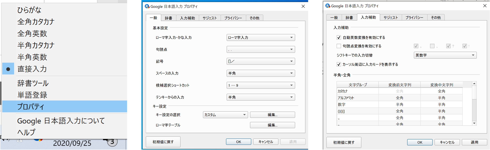
CLI の基本操作
プログラムの開発環境にはマウスなどでクリックして操作する GUI (Graphical User Interface) をもった IDE (Integrated Development Environment) などもありますが, 基本的には文字によってコンピュータに命令を送る CLI (Command Line Interface) を利用します. 映画やマンガなどで, ハッカーが黒い画面に文字を打ち込んでいる場面の, あの画面です.
コンピュータのオペレーティングシステムとユーザ間の CLI を提供するプログラムを Shell といい, Windows では, Command Prompt や PowerShell などがあります. Mac などの Unix 系では, Bash や zsh があります. これらは端末ソフトウェアを介して利用します. Windows では Windows Terminal, macOS ではターミナル (Terminal.app) です.
開発に使う環境は好みで選んで構いません. 以下では PowerShell での操作を示します.
Windows 11 の検索バーで Terminal と検索して, 出てきた Terminal をクリックしましょう.
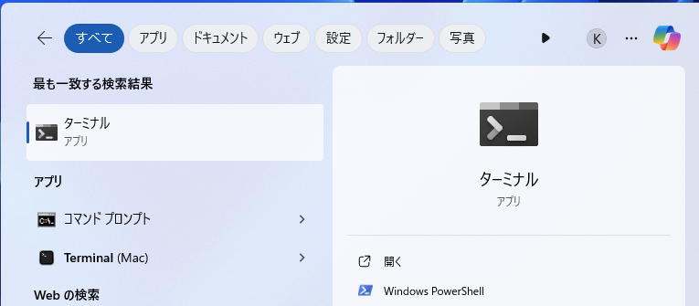
自動的に Windows PowerShell が起動します. 立ち上がった黒色の画面に文字でコマンド (命令) を入力して, コンピュータを操作します. macOS では, Spotlight (Command + Space) で「ターミナル」と検索して開きます.
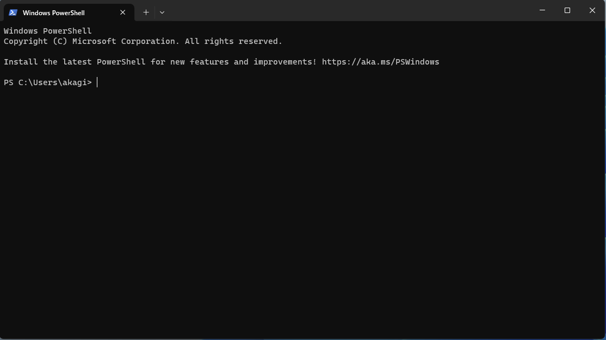
エンコーディング
実際にコマンドを入力する前に, 初心者がつまずきやすいポイントとして, Windows のエンコーディングについて解説します.
PC は文字をそのまま扱えず, 内部ではすべて数値 (バイト列) として記録します. そこで, 1 つ 1 つの文字をどのバイト列で表すかという対応の規則を決めておきます. この規則を文字エンコーディングと呼びます. 同じ文字でもエンコーディングが違えばバイト列が変わるので, 書いた側と読む側でエンコーディングが食い違うと文字化けが起きます.
エンコーディングには複数の種類があります (日本語設定の Windows は Shift-JIS, Unix 系は Unicode が一般的です). Python は UTF-8 という文字エンコーディングがデフォルトなので, Windows においても可能な限り UTF-8 を用いた方が良いです.
そこで, ターミナル上で利用するエンコーディングを変更します.
PowerShell を起動して, chcp 65001 と打ち込み, PowerShell 上で利用する文字エンコーディングを UTF-8 に変更しましょう. chcp が利用する文字コードを変更するコマンド (change code page) で, その後に変更したい文字コードを入力します. 65001 は, Windows がエンコーディングに割り振っている番号 (コードページ) のうち, UTF-8 を表す番号です. これは PowerShell を起動するたびに行ってください.
chcp 65001と入力すると,
Active code page: 65001
PS C:\Users\user>のように表示されるはずです.
日本語表示
PowerShell の設定によっては日本語が表示されず, 日本語部分が □ で置き換えられて表示されます. これは, 使用しているフォントに日本語が含まれていないために発生します.
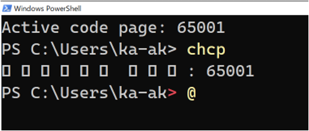
設定を変更して日本語を表示できるようにしましょう (適当な日本語を入力してみて, 問題なく表示されるようであれば, 変更は必要ありません).
左上の 下向きの矢印 > 既定値 > 外観 > フォントフェイス の部分を日本語フォントに変更し 保存 をクリックすることで, 日本語が表示されるようになります.
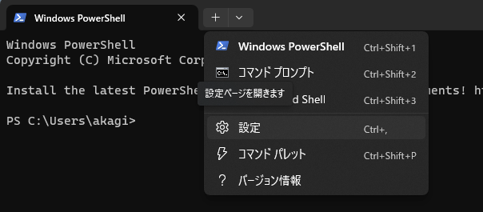
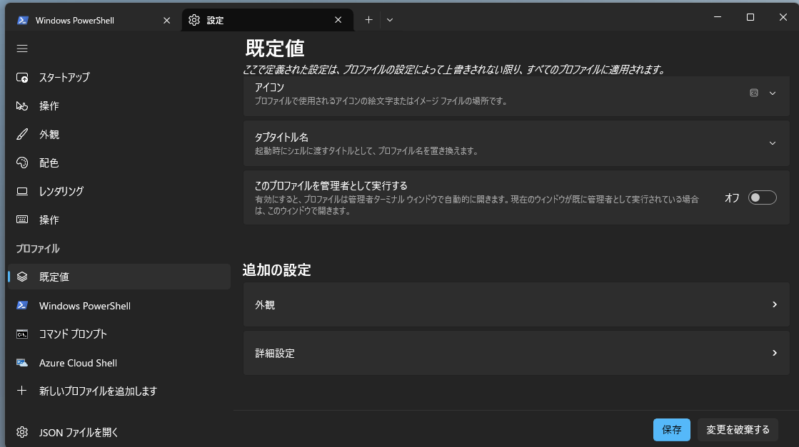
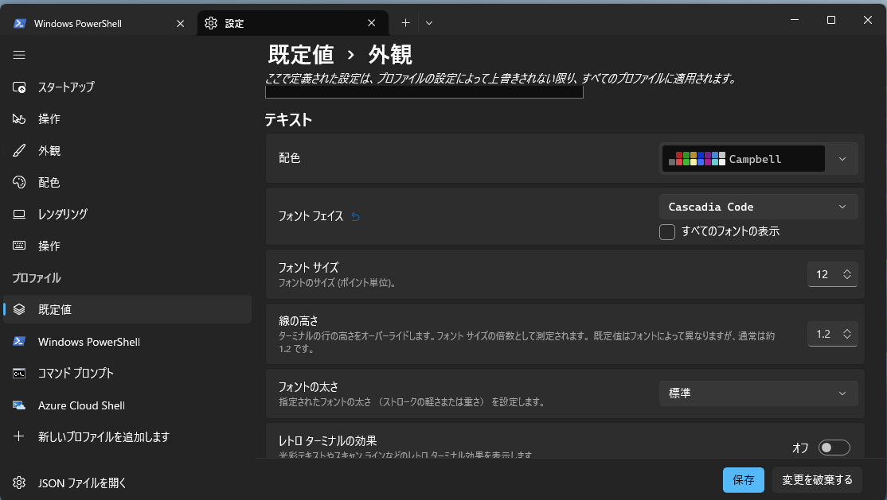
その他色やサイズなど, 好きな設定に変更できます. あとで, 好みにカスタマイズしましょう.
ディレクトリ
基礎的なコマンドを学ぶ前に, ディレクトリに関して理解しておきましょう. コンピュータの中のデータは, 以下のような木構造になっています. ファイルを分類して入れておく入れ物 (フォルダ) をディレクトリといい, ディレクトリの中にさらにディレクトリを入れられるので, 全体が木の形になります. この全体をディレクトリ構造と呼びます.
C: -- Users -- hoge
|
-- hoge2 -- Desktop
|
-- Downloads
|
-- Documents -- huga
|
-- huga2CLI において, ユーザはこの木構造のどこかに存在しており, この木構造を移動しながら様々な作業を行います. 現在いるディレクトリのことを working directory(以下 wd) や current directory といいます.
基礎的なコマンド
プログラミングで最低限必要になるコマンドを, ディレクトリの移動に関するものを中心に学習します.
wd は, CLI の左側に表示されていることが多いです.
PS C:/Users/hoge2>のように表示されていれば今 C: ドライブ下の Users 下の hoge2 が wd となります.
Windows では, ディレクトリを区切る文字が
¥あるいは\で表示されていると思います.Mac では,
/です.
本資料では, / を利用しています. 自分の環境に合わせて適宜読み替えてください.
CLI の左側に表示されていない場合にも pwd コマンド (print working directory) を入力すると, 現在のディレクトリが表示されます.
PS C:/Users/hoge2> pwd
PATH
----
C:/Users/hoge2wd の下に何があるかを調べるコマンドとして ls コマンド (list) があります.
以下, PS C:\Users\hoge2 の部分は省略します.
> ls
Desktop
Downloads
Documents※実際の画面では, もう少しいろいろな情報が書かれているかと思います.
ディレクトリ構造を確認するコマンドとして tree があります. tree と入力して Enter キーを押すと, wd 以下のディレクトリ構成が確認できます.
> tree
Folder PATH listing
Volume serial number is 00000157 B8F4:6480
C:.
├───Contacts
├───Desktop
├───Documents
│ ├───hoge
│ └───slds
│ └───program
├───Downloadstree [PATH] と入力すると, wd ではなく指定した [PATH] 以下のディレクトリ構造が表示されます.
また, /f オプションを加えることでファイルも表示されます.
> tree .\Documents\ /f
Folder PATH listing
Volume serial number is 000001D1 B8F4:6480
C:\USERS\AKAGI\DOCUMENTS
├───hoge
│ hello.py
│ slds-2-10.py
│
└───slds
└───program
hello.pymacOS には tree コマンドが最初から入っていないため, Homebrew でインストールします. Homebrew は, 後述のソフトウェアの管理で導入します. 導入したあとで, 次を実行してください.
brew install treeまた, オプションも Windows とは異なっています.
| コマンド | 意味 |
|---|---|
| -d | ディレクトリのみ表示 |
| -L N | N 階層まで表示 |
| -P X | 正規表現 X に従って表示 |
> tree
.
├── hoge
│ └── hoge.py
└── huga
└── huga.py
3 directories, 2 files
> tree -d
.
├── hoge
└── huga
3 directories
> tree -L 1
.
├── hoge
└── huga
3 directories, 0 files
> tree -P "hoge*"
.
├── hoge
│ └── hoge.py
└── hugawd から別のディレクトリに移動するコマンドとして cd コマンド (change directory) があります.
cd [移動先] と打つことで, ls コマンドで出てきたディレクトリに移動できます.
> ls
Desktop
Downloads
Documents
> cd Documents
> pwd
PS C:/Users/hoge2/Documents移動先のディレクトリ名はすべて自分で入力する必要はありません. 最初の数文字を入力して Tab キーを押すと, 自動で補完されます.
cd .. と打つと一つ上 (親) のディレクトリ, cd ~ と打つとホームディレクトリ (基本的には最初に開いた際にいた場所) に一挙に移動することができます.
> pwd
PS C:/Users/hoge2/Documents
> cd ..
> pwd
PS C:/Users/hoge2
> cd Documents/huga
> pwd
PS C:/Users/hoge2/Documents/huga
> cd ~
> pwd
PS C:/Users/hoge2mkdir [作りたいディレクトリ名] コマンド (make directory) で, 新しいディレクトリを作成できます.
rmdir [消したいディレクトリ名] コマンド (remove directory) で, ディレクトリを消すことができます.
> pwd
PS C:/Users/hoge2
> ls
Desktop
Downloads
Documents
> cd Documents
> ls
huga
huga2
> mkdir huga3
> ls
huga
huga2
huga3
> rmdir huga3
> ls
huga
huga2rmdir は空のディレクトリを消すためのコマンドです. macOS では中身のあるディレクトリは消せません. Windows の PowerShell では, 中身のあるディレクトリを指定すると「中身も削除するか」の確認が出ます. 確認に「はい」と答えると中身ごと消えるので, 意図しないときは N を押して取り消します. 中身ごと消す方法は次の rm の節で扱いますが, 事故が起きやすいので慣れるまでは使いません.
touch [作りたいファイル名] コマンドで空のファイルを作成できます (macOS). Windows の PowerShell には touch が無いので, 代わりに ni [作りたいファイル名] (New-Item) を使います. テキストエディタを開く前に, CLI からファイルだけ先に用意しておきたいときに便利です.
rm [消したいファイル名] コマンド (remove) でファイルを削除できます. rmdir がディレクトリ用であるのに対し, rm はファイル用です.
rm で削除したファイルはゴミ箱に入らず, 基本的に復元できません. 実行前に対象が正しいかを必ず確認しましょう. なお rm -r [ディレクトリ名] とするとディレクトリを中身ごと削除できますが, 対象を 1 つ誤るとその下のファイルがすべて消えるので, 慣れるまでは使いません.
> ls
huga
huga2
> touch memo.txt # Windows の PowerShell では ni memo.txt
> ls
huga
huga2
memo.txt
> rm memo.txt
> ls
huga
huga2プログラムの中断
CLI 上でプログラムを実行している最中に止めたくなることがあります (例えば無限ループに入ってしまった場合など). そのようなときは Ctrl + C (Ctrl キーを押しながら C キー) を入力することで, 実行中のプログラムを強制的に中断できます. これから何度も使うので覚えておきましょう.
練習: 作業用ディレクトリを作ろう
これから, 作業をするためのディレクトリをコマンドで作成しましょう.
- ホームディレクトリ (
cd ~) に移動 - work というディレクトリを作成し移動
Documents やデスクトップは使いません. Windows では OneDrive, macOS では iCloud Drive の同期の対象になっていることがあり, 同期がプログラムのファイルや git の記録を壊すことがあるためです. 詳しくは共通資料 バージョン管理とGitHubの「リポジトリを置くディレクトリ」で扱います.
以降は受講している講義に応じてディレクトリを作成してください (名前は好きに設定して良いです).
データサイエンス実践の場合
- work の中に dsp というディレクトリを作成し移動
これからこの講義の練習で利用するプログラムなどは dsp に保存しましょう. 課題を記録する GitHub のリポジトリは, 共通資料 バージョン管理とGitHubの手順で work の中に作ります.
関数型プログラミングの場合
- work の中に functional_programming というディレクトリを作成し移動
これから関数型プログラミング講義で利用するプログラムなどは functional_programming に保存しましょう.
ソフトウェアの管理
パッケージマネージャは, ソフトウェアのインストールと更新を, CLI の基本操作で扱った CLI のコマンドで管理する仕組みです. Web サイトからインストーラーを個別に探す方法と比べて, 同じ名前のソフトウェアを同じ手順で導入できます.
本講義で使うソフトウェアは, 個別に別の手順を指定したものを除き, Windows では winget, macOS では Homebrew で管理します.
Windows: winget
winget は Microsoft が提供する Windows のパッケージマネージャです. Windows 11 には標準で含まれています. PowerShell で次を実行し, バージョンが表示されることを確認します.
winget --versionwinget が認識されない場合は, Microsoft Store で「アプリ インストーラー」(App Installer) をインストールまたは更新し, PowerShell を開き直します.
コーディングエージェントを使う講義では, winget でソフトウェアを入れる前に, 開発者モードをオンにします. 「設定」を開き, 「システム」の「詳細設定」にある「開発者向け」の欄で, 開発者モードをオンにします. 確認が出たら「はい」を押します.
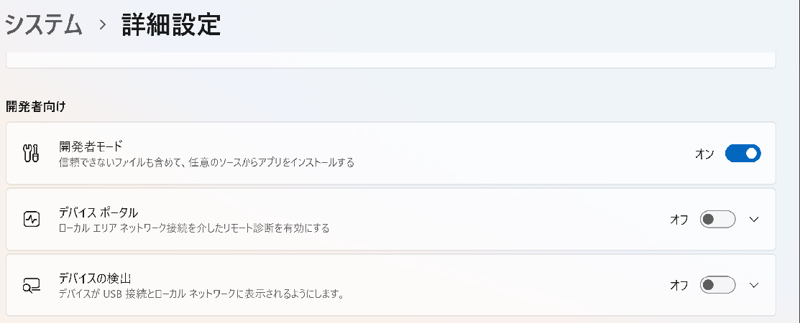
winget で入れるソフトウェアの一部 (実行ファイルだけを配る形のもの) は, コマンド名から実行ファイルへのリンクを作って使えるようにします. 開発者モードがオフだとこのリンクを作れず, インストールが完了と表示されてもコマンドが認識されません. 共通資料 コーディングエージェントの利用で入れる codex がこの形です. 開発者モードは, 署名の無いアプリの導入なども許す設定なので, コーディングエージェントを使わない講義では変える必要はありません.
macOS: Homebrew
Homebrew は macOS のパッケージマネージャです. macOS には最初から入っていないため, 未導入の場合は Homebrew の公式サイトにある手順でインストールします. インストール後に次を実行し, バージョンが表示されることを確認します.
brew --versionHomebrew のインストール完了時に, brew を利用できるようにするための追加コマンドが表示されることがあります. 表示された場合は, そのコマンドも実行してからターミナルを開き直します.
テキストエディタのインストール
テキストエディタとは, プログラムを書くためのソフトウェアです. プログラムを書くことをコーディング (Coding) といいます.
テキストエディタにはたくさんの種類があり, それぞれ独自の機能を持っています. Windows に最初から入っている「メモ帳」もテキストエディタですが, プログラムを書くために様々な機能が追加された高機能なテキストエディタもたくさんあります.
例えば, シンタックスハイライト機能は, 以下のプログラムのように, プログラムの記述を役割や意味に応じて色付けして見やすくしてくれます.
## シンタックスハイライト
from datetime import datetime
def greet_based_on_time():
now = datetime.now()
current_hour = now.hour
if 5 <= current_hour < 12:
greeting = "Good morning, world!"
elif 12 <= current_hour < 18:
greeting = "Good afternoon, world!"
else:
greeting = "Good night, world!"
return greeting
# 関数を呼び出して結果を表示
print(greet_based_on_time())また, スペースをタブに変換するなどの機能もあります.
この資料では世界的に人気のある Microsoft の開発したテキストエディタである VSCode (Visual Studio Code) を利用します. 最近では生成 AI を利用した自動補完機能が付いた Cursor (有料) などもあります. AI 利用法は共通資料 コーディングエージェントの利用で扱います. Cursor を既に利用している場合は, そちらを使っても構いません. それ以外のテキストエディタを使う場合は, 必要な設定を各自で行ってください.
ソフトウェアの管理で確かめた winget と Homebrew で入れます. Windows は PowerShell で次を実行します.
winget install -e --id Microsoft.VisualStudioCodemacOS はターミナルで次を実行します.
brew install --cask visual-studio-codeインストールが終了したら VSCode を起動します. サインインを求められますが, ここでは「Continue without Signing In」を選択してサインインせずに進めます.
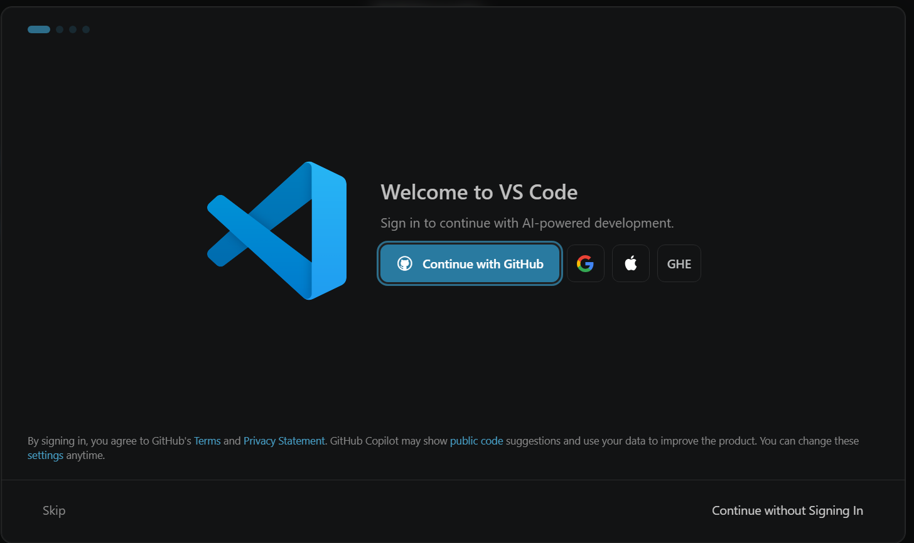
表示モードは好きなものを選択してください.
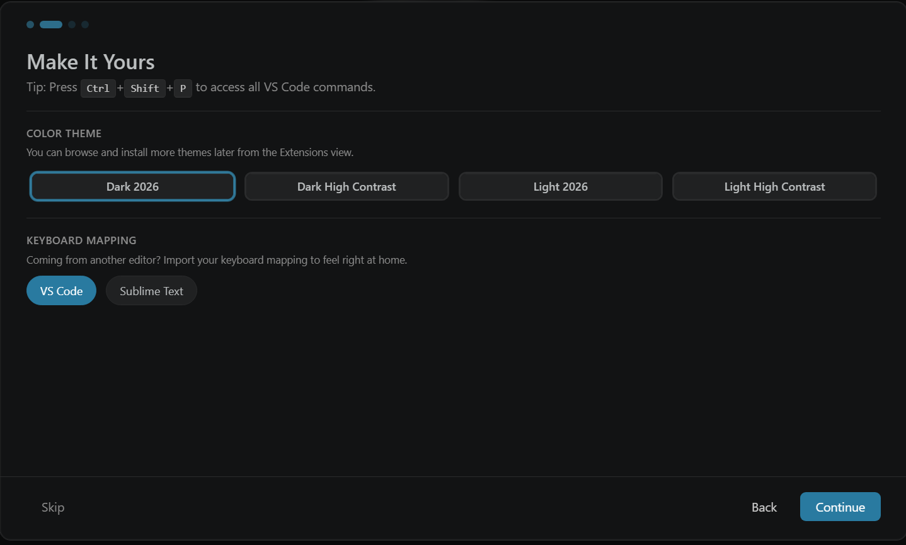
拡張機能はこのあと入れるので Skip してください.
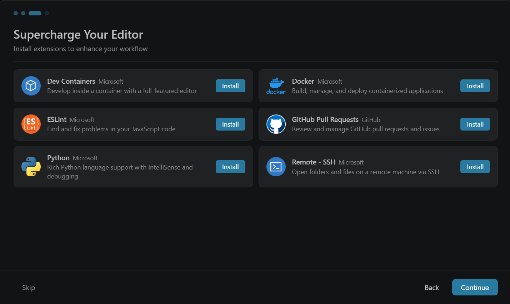
VSCode は様々な拡張機能があり, 利用しやすいようにカスタマイズすることが可能です.
その他の便利な拡張機能等に関しては自己責任で調べて導入してください.
左側にある四角が 4 つ並んだアイコンを選択します.
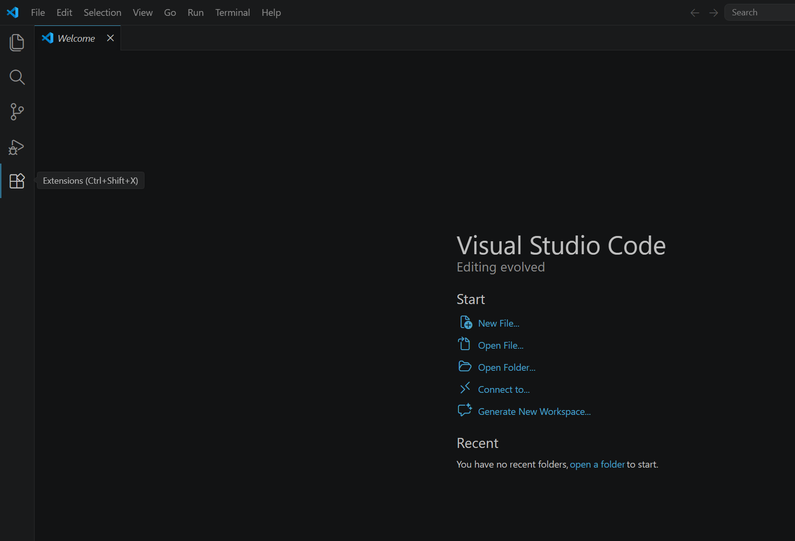
拡張機能: データサイエンス実践
検索窓に Python と入力して Python の install を押します.
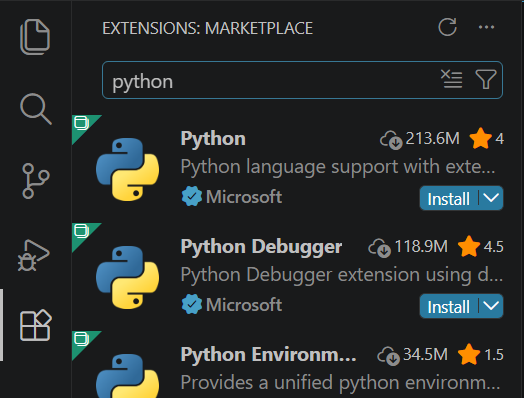
検索窓に latex と入力して LaTeX Workshop の install を押します.
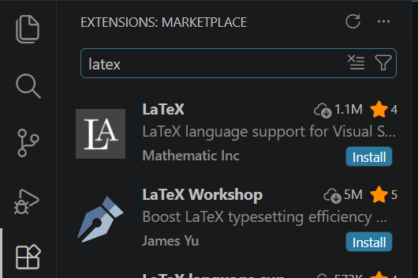
LaTeX の本体 (TeX Live) の導入とビルドの設定は, 共通資料 LaTeX による原稿作成で扱います.
拡張機能: 関数型プログラミング
検索窓に Haskell と入力して Haskell Syntax Highlighting の install を押します.
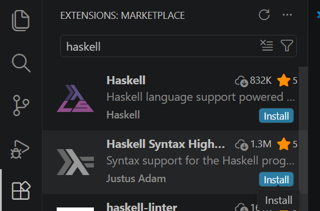
これで基本的な設定は完了です.
ファイルを編集する際には, 左側のファイルアイコンをクリックして, プログラムの保存されているフォルダを選択します.
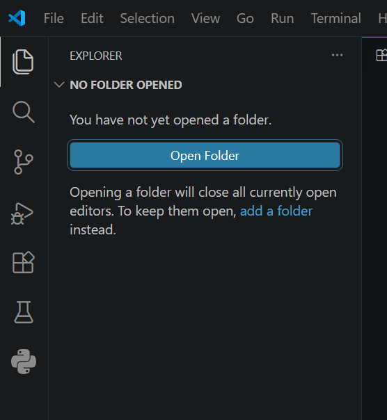
ディレクトリが表示されるので, 編集したいファイルをクリックすることで編集が可能となります.
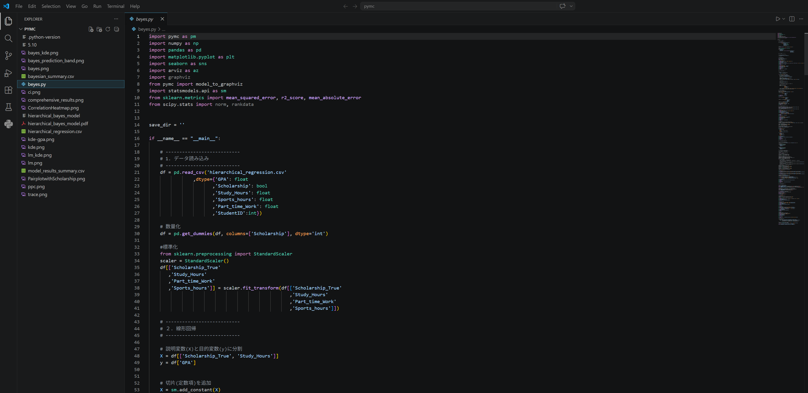
その他細かな利用法に関しては, 今後実際に利用する際に説明します. また, 基本的な操作やショートカット等に関しては, 各自で調べてみてください.